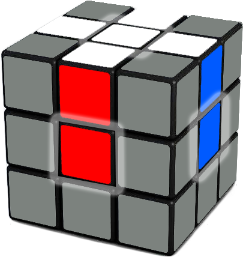

Ja Tev nepatīk mana pamācība, šiet būs citas.
Citas pamācibas:
Mūsdienās 2022, kad raksto šo pamācību ir pieejama "māte" google. Pajautā viņai kā salikt rubika kubu un viņa Tev pateiks.
Ļoti labs video iesācējiem. Bet viņa video solis 3 formula var būt nesaprotama iesācējiem. Solī 5 un 7 būti labi iemācīties papildus divas formulas, lai viena formula nav jāvada 5 reizes.
YouTube: FunFace LV
- - - - - - - - - - - - -
Otra pamācība:
Arī labs video. Bet man nepatīk kā viņš liek rubika kuba pēdējo slāni. Bet es ticu ka viņš Tev var iemācīt salikt.
YouTube: Latviancuber
- - - - - - - - - - - - -
Ko nevaru salikt!! Ko man darīt?
Nepadodies Tev izdosies. Internētā ir daudz dažādas pamācības dažādās valodās. Tie kas grib salikt saliks. Ja ir kādi jautājumi jautā man.
Kā salikt Rubika kubu! language: latvian
Es sāku likt rubika kubu aptiveni 2009. gada vasarā! Varu viņu salikt no 30 sekundēm līdz 59 sekundēm. Kā arī varu viņu salikt izmantojot "ar aiztaisītām acīm" medoti, bet par to vēlāk.
Tāpēc ik pa laikam draugi man prasa kā es to daru! Esmu iemācījis cilvēkiem salikt rubika kubu. Mācoties programēt esmu nolēmis savas zināšanas apkopot vienā vietā.
Čau! Esi sveicināts manā necilājā mājas lapā. Es izveidoju PDF failu kurā es aprakstu kā salikt pirmos divus slānus rubikam kubam. Spied šiet. lai atvērtu PDF failu.
Cik saprotu ar PDF failu būs par maz, tapēc es izveidoju pagaidām 2 video kas tev palīdzēs salikt rubika kuba pirmos divus slāņus. Kpc tikai divus? Jo pēdējam man ir jau iepriekš sagatavots JPG fails. Spied šiet. Lai to apskatītu. Lai saliktu pēdējo slāni. Skaties manu pēdējo video.
Vai salikt rubika kubu ir grūti?
.....Noteikti nē!
Kā to izdarīt?
Mēģināsu salikt kopā īsu pamācību, lai tev rastos priekšstats par to kā tas notieik.
Ko Tev vajadzētu zināt:
Sākumā tev jāsaliek KRUSTS
Tas tev jāiemācās darīt pašam. Tur nekādas formulas nevajag. Ja to Tev nezidodas izdarīt pašam dodies pie šīs lapas pirmā video.
Tad Tev jāsaliek pirmais slānis.
Blakus stūriem Tev ir jāievieto stūri.

Lai to izdarītu Tev ir jāatrod nepieciešamais stūris un jānovieto tas zem pareizās vietas kā redzams attēlā zemāk un jāievada formulas.


Tagad jāsaliek otrais slānis.


Un protams pēc tam paliek pēdējais slānis. Lai saliktu to, paskaties attēlu tālāk šajā lapā.
Šīs nu ir īsās pamācibas beigas. Ceru ka Tev radās priekšstats par to kā salikt rubika kubu. Vienkārši skaties video un tu sapratīsi daudz vairāk.
- - - - - - - - - - - - - - - - - - - - - - - - - - - - - - - - - - - - - - - - - - - - - - - - - - - - - - - - - - - - - - - - - - - - -
Kā salikt Rubika kubu krustu! language: latvian
Šis ir tas pirmais video par, kuru runāju iepriekš. Ja godīgi viņš varētu būt par garu, bet tas nekas. Ja tiešām vēlies salikt rubika kubu tad tev viņš ir jānoskās, vai arī jāatrod YouTube īssāks video.
Kā salikt Rubika kuba pirmos divus līmeņus! Otrā daļa! language: latvian
Otrā daļa! language: latvian
Ja Tu tiki galā ar pirmo video tad otrais būs viegls.
Pēdējais slānis.
Izmanto šo bildi, lai saliktu rubika kuba pēdējo slāni.

Kā salikt rubika kuba pēdējo slāni!
Šiet būs arī video. Izmanto bildē redzemās fromulas un video pamācību, lai saliktu rubika kuba pēdējos slāni.
Kas jādara tālāk? Gatavs. Ja Tev viss ir izdevies Tu esi salicis rubika kubu. Parādi savas prasmes draugiem un dalies ar šo mājas lapu.
Ceru ka Tev izdevās! Ja, Jā tad malacis. Ja, nē tad nekas sāc no sākuma.
Zemāk ir redzems video kā es salieku rubika kubus ar aiztaisītām acīm.
Ja es varu ar parastu atmiņu salikt rubika kubu ar aiztaisītām atcīm. Tici man Tu viņu vari salikt ar attaisītām acīm.
Did You know?
Salikt kubu ar aiztaisītām acīm nav grūti.YouTube badmephisto!.
You can use my pair images trainer for Blindfolded Rubik's cube solving.